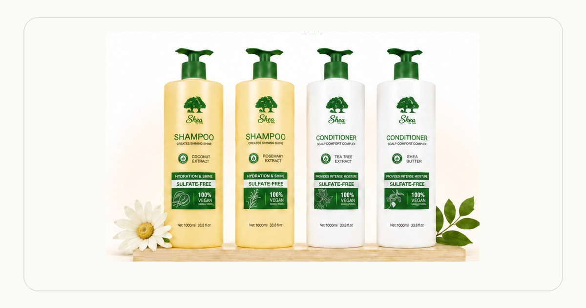

A practical hair care routine does not need to be complicated. In Ethiopia, changing weather, dry air, dust, protective styles and different hair textures can all affect how often you cleanse and condition your hair.
Start with your scalp
A good routine begins with understanding how often your scalp needs cleansing. Product buildup, sweat, dust and styling habits can influence your wash schedule. For many people, washing one to three times per week provides a useful starting point.
Choose the right shampoo
Apply shampoo mainly to the scalp and roots. Massage gently with your fingertips, then rinse thoroughly. For a hydration-focused option available through Shea Tea Tree in Addis Ababa, explore the Coconut Extract Shampoo.
Condition every wash
Conditioner supports softness, detangling and moisture. Focus the product on the mid-lengths and ends, leave it on for two to three minutes, then rinse with cool or lukewarm water.
Protect moisture between wash days
Reduce unnecessary heat, cover hair at night with a satin scarf or bonnet and avoid adding too many heavy products between washes. During Addis Ababa’s dry season, pay extra attention to moisture and gentle handling.
Keep the routine consistent
Consistency matters more than complexity. A clear shampoo-and-conditioner routine, adjusted to your hair texture, local climate and styling habits, creates a strong foundation for healthier-looking hair.
How often should I wash my hair?
Many people wash one to three times per week, but the right frequency depends on hair type, scalp oil, exercise, styling products and climate.
Should I condition after every shampoo?
Yes. Conditioning after shampooing can help support softness, detangling and manageability.
Does Addis Ababa’s climate affect hair care?
Yes. Dry air, dust and seasonal changes can increase the need for gentle cleansing and consistent moisture support.
Need product guidance?
Call or WhatsApp Shea Tea Tree in Addis Ababa for help choosing a shampoo and conditioner routine.
WhatsApp +251 91 128 7197